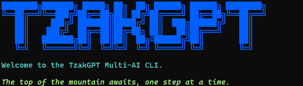

████████╗███████╗ █████╗ ██╗ ██╗ ██████╗ ██████╗ ████████╗
╚══██╔══╝╚══███╔╝██╔══██╗██║ ██╔╝██╔════╝ ██╔══██╗╚══██╔══╝
██║ ███╔╝ ███████║█████╔╝ ██║ ███╗██████╔╝ ██║
██║ ███╔╝ ██╔══██║██╔═██╗ ██║ ██║██╔═══╝ ██║
██║ ███████╗██║ ██║██║ ██╗╚██████╔╝██║ ██║
╚═╝ ╚══════╝╚═╝ ╚═╝╚═╝ ╚═╝ ╚═════╝ ╚═╝ ╚═╝
TzakGPT is an open-source, terminal-based AI assistant powered by DeepSeek. It streams responses, reads and edits files with visual diffs, runs shell commands safely, and remembers every session — all running locally on your machine.

A local CLI coding assistant powered by DeepSeek. It operates directly on your file system — your code never leaves your machine. Responses stream token-by-token, file writes produce color-coded diffs, and every shell command requires confirmation. Press X to interrupt mid-response.
Responses stream token-by-token into a live-updating panel. Press X at any time to interrupt — useful when the model heads down the wrong path.
Every file write outputs a color-coded, line-numbered diff so you can verify exactly what changed before moving on.
Choose between Flash (fast, default) and Pro (more capable) at startup or anytime via /model. The active model is shown in every prompt.
Shell commands pause the loop and require explicit confirmation before running. Status spinners show progress on non-interactive calls.
After 6 turns, older context is automatically summarized while recent messages stay intact — preventing token bloat during long sessions.
Sessions auto-save as JSON files with collision-resistant naming. Resume any session from the startup menu, with up to 30 stored.
The agent follows a structured loop: user input is processed with auto-completion, a payload of system instructions and conversation history is assembled, DeepSeek streams the response token-by-token, and tool calls execute locally with error handling.
| Module | Role |
|---|---|
src/main.py |
UI loop, agent orchestration, slash commands, streaming display, model selection. |
src/clients.py |
DeepSeek API integration via OpenAI client — handles both streaming and non-streaming calls. |
src/soul.py |
System prompt, tool schemas, sliding window logic, greeting pool. |
src/tools.py |
Implements the four local tools: file read, file write with diffs, directory listing, and secure shell execution. |
src/session.py |
Telemetry, action logging, token counting, and session persistence/restore. |
src/display.py |
TUI components: visual diffs, action labels, command confirmation prompts. |
web/ |
This documentation site — HTML, CSS, and JavaScript. |
Every prompt includes your current working directory and a summary of recent actions. Combined with the self-verification protocol (read-back after every write), the agent never operates blind.
All four tools use the OpenAI-compatible function-calling schema with comprehensive error handling. Available in every conversation turn.
| Tool | Parameters | Description |
|---|---|---|
read_file |
path (string, required) |
Reads the full contents of any file. Used before every edit to ensure the latest state is known. |
write_file |
path (string), content (string) |
Writes or overwrites a file. After writing, TzakGPT reads it back and displays a color-coded diff. |
run_command |
cmd (string, required) |
Executes a shell command. The loop pauses for explicit confirmation before proceeding. |
list_directory |
path (string, optional) |
Lists files and subdirectories. Defaults to the current working directory. |
Every shell command requires explicit approval before execution. The agent never runs system commands autonomously.
Press X at any time during thinking or tool execution to halt the model instantly. Control returns to the prompt immediately.
Typing / opens an auto-completing dropdown for session management. All commands are available at any point during a conversation.
/help
Show the full list of available commands.
/clear
Reset conversation history (with confirmation).
/status
Display the session activity log.
/tokens
Show token usage statistics.
/save [name]
Save a named session checkpoint.
/load [name]
Load a saved session by name.
/model [pro|flash]
Switch between Flash and Pro on the fly.
/bell
Toggle the terminal bell on response completion.
After 6 turns, a sliding window algorithm automatically summarizes older context while keeping recent messages intact — preventing token bloat without losing the conversation thread.
The sliding window preserves the system prompt at the top and the most recent turns at the bottom. Older messages in the middle are compressed into a compact summary block, reducing token usage while maintaining context.
A color-coded token bar is displayed below every response so you always know how close you are to the context limit.
Every conversation is automatically saved as a JSON file in src/sessions/. Session naming uses a collision-avoidance algorithm — if a name already exists, an incrementing suffix is appended to prevent data loss.
Each session is a portable JSON file containing the full message array, timestamp, session name, and model used. Back them up, share them, or inspect them with any text editor.
On launch, TzakGPT shows a numbered list of recent sessions with turn counts, model info, and timestamps. Pick one to resume exactly where you left off, or start fresh. Sessions are capped at 30, with older ones pruned automatically.
Install and configure TzakGPT in under five minutes.
git clone https://github.com/GSigioltzakis/TzakGPT && cd TzakGPT
pip install -r requirements.txt
Copy the example file and add your DeepSeek API key.
cp .env.example .env — then edit .env with your DEEP_KEY
python3 src/main.py
Select a session from the startup menu or start fresh. Type your first prompt and let TzakGPT help with file operations, code generation, and shell commands.
| Dependency | Version | Purpose |
|---|---|---|
| Python | 3.10+ | Core runtime environment. |
| prompt_toolkit | 3.x | Rich terminal input with auto-completion and key bindings. |
| Rich | 13.x | Terminal formatting: tables, Markdown rendering, colored output. |
| openai | 1.x | API client for DeepSeek endpoint communication. |
| python-dotenv | 1.x | Loads .env variables into the runtime. |
| readchar | 4.x | Single-character input detection for X-to-interrupt. |
| Variable | Required | Purpose |
|---|---|---|
DEEP_KEY |
Yes | Your DeepSeek API key. |
TZAK_BELL |
No | Enable terminal bell — set to true, 1, or yes. |